방 하나를 가득 채우던 컴퓨터부터 손바닥 위 스마트폰까지, 컴퓨터를 편하게 쓰게 만든
사람들
옛날엔 컴퓨터 한 대가 방 하나를 가득 채울 만큼 컸고, 한 번에 한 사람만 쓸 수 있었어요. 어떤 야간 근무자는 “테이프를 갈아 끼우다 해가 뜨겠다”며 한숨을 쉬었고,
NASA와 대학 연구실은 “한 대의 기계를 여러 명이 동시에 나눠 쓸 방법이 없을까?”라며 머리를 싸맸습니다. 그 시절엔 컴퓨터와 사람 사이를 잇는 모든 일이 다 손으로
해야 하는 노동이었어요.
그러다 누군가는 “기종이 달라도 똑같이 쓸 수 있게 하자”고 제안했고, 또 다른 누군가는 “복잡한 일도 작은 도구를 이어 붙이면 풀 수 있다”고 했어요. 윈도우와 맥은 집과
사무실을 같은 화면으로 묶었고, 리눅스는 “함께 고치는” 문화를 만들었습니다. 그 후 아이폰과 안드로이드가 등장하면서 손바닥 위에서 거대한 컴퓨터를 다루는 시대가 열렸어요.
아래 연도 버튼을 누르면 그 시절 사람들이 무엇을 걱정했고 어떻게 풀었는지 이야기로 차근차근 따라가 볼 수 있어요. 낯선 용어가 나와도 괜찮습니다. 사람과 상황, 그리고 우리에게 남긴
교훈을 차근차근 풀어드릴게요.
버튼을 선택하면 같은 화면에서 자세한 이야기를 읽을 수
있습니다.
1940s
"전선 옮기지 말고, 명령만 바꾸자"
케이블을 일주일씩 다시 꽂던 시절, 맨체스터와 케임브리지 연구원들이 "명령을 종이에 적어 넣기만 해도 기계가 다른 일을 해요"라는 발상을 처음으로 증명한 시대예요.
1950s
"테이프 갈다 해가 뜨겠어요"
수십억 원짜리 컴퓨터를 24시간 돌리고 싶은데, 운영자가 한 시간에 한 번씩 테이프를 갈아야 했던 시절. GM과 IBM 야간조가 "컴퓨터가 다음 작업으로 알아서 넘어가게 하자"는 발상으로 '운영체제'라는 개념을 처음 만들어낸 이야기예요.
1960s
"기계를 바꿔도 내 프로그램이 살아남았으면"
IBM은 "같은 프로그램이 큰 컴퓨터에서도 작은 컴퓨터에서도 다 돌아가게 하자"는 도박에 나섰고, 벨 연구소의 두 엔지니어는 "거대한 한 덩어리 말고 작은 도구를 이어 붙이자"는 정반대 길을 택했어요.
1970s
"컴퓨터 50종류에 맞춰 프로그램을 50번 만들 순 없잖아요"
책상 위에 올라가는 작은 컴퓨터가 처음 등장한 시대. "운영체제와 하드웨어를 분리하자"는 한 사람의 깨달음과, "한 대가 죽어도 시스템은 안 죽게 하자"는 DEC의 집념이 지금도 우리 노트북 속에 살아 있어요.
1980s
"컴퓨터가 드디어 집으로 들어왔어요"
빌 게이츠의 5만 달러짜리 한 결정이 마이크로소프트를 30년 1위로 만들었고, 스티브 잡스가 본 제록스 연구소의 한 장면이 아이콘과 마우스로 가득한 '모두의 컴퓨터' 시대를 열었어요.
1990s
"취미로 만들었는데 같이 해요?"와 "시작 버튼을 누르세요"
핀란드 21살 학생의 취미 프로젝트가 전 세계 개발자들의 합작으로 번지던 그때, 마이크로소프트는 롤링 스톤스 음악과 함께 화면 왼쪽 아래에 큰 버튼 하나를 심어 평범한 가정의 거실로 컴퓨터를 배달했어요.
2000s
"이건 세 가지 제품이 아닙니다. 한 가지 제품입니다"
망할 뻔한 애플이 UNIX 위에 매킨토시 디자인을 얹어 되살아나고, 스티브 잡스가 무대에서 '아이폰'이라는 이름을 처음 부른 순간 휴대폰 역사가 다시 쓰였어요. 구글은 "모두가 함께 쓰자"며 무료 운영체제를 들고 따라붙었고요.
2010s
"내 컴퓨터에선 되는데 서버에선 왜 안 되죠?"
개발자들을 괴롭히던 오랜 농담이 한 작은 회사의 '컨테이너' 발상으로 사라지고, 구글이 10년간 쓰던 내부 노하우를 공개하면서 거대 사이트들의 뒷면을 자동으로 지키는 새 시대가 열렸어요.
2020s
"칩을 통째로 갈아치웠는데 사용자는 몰라요"
애플은 25년간 쓰던 인텔 칩을 자기네 칩으로 바꾸면서도 기존 앱을 그대로 돌렸고, 마이크로소프트는 코로나가 바꾼 일하는 방식에 맞춰 "PC가 꼭 물리적인 기기일 필요는 없다"는 새 정의를 내놓았어요.
더 깊이 읽을 거리
운영체제가 배치 작업, 타임셰어링, 모바일과 클라우드를 품어 가는 과정을 기록한 1차 자료와 회고를 모았습니다.
"케이블 한 가닥도 안 옮겼는데 새 계산을 했어요!" 기계는 그대로 두고 명령만 바꿔서 다른 일을 시킨다는, 오늘날 모든 노트북과 스마트폰의 출발점이 된 작은 실험이에요.
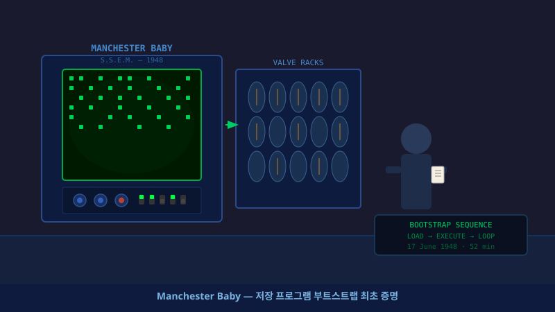
1940년대 후반 컴퓨터는 완전히 이상한 기계였습니다. 새 계산을 시키려면 케이블과 스위치를 손으로 다시 꽂고 며칠씩 재배선해야 했어요. 마치 큰 빨래판 같은 회로 패널 앞에 서서 전선을 일일이 옮기는 게 "프로그래밍"이었습니다. 한 계산이 끝나면 다음 계산을 위해 다시 처음부터 며칠을 작업해야 했어요. 한 연구원은 한숨 쉬며 말했어요. "계산 한 번 하는 데 일주일이 걸려요. 새 계산은 또 일주일이고요. 이래서야 컴퓨터를 어떻게 써요?"
맨체스터 대학의 연구진은 기발한 생각을 떠올립니다. "명령(프로그램)을 데이터처럼 메모리에 저장해두면 어떨까? 그러면 다른 계산을 시키고 싶을 때 케이블을 옮기지 말고, 메모리에 새 명령을 적기만 하면 되잖아."
1948년 6월 21일, 그들은 세계 최초로 이 방식이 작동하는 걸 시연했습니다. 기계의 별명은 "Baby"(작은 컴퓨터라서). 메모리에 17개 명령을 적어두자 컴퓨터가 그걸 차례로 읽어 실행하며 답을 내놓았어요. 한 연구원은 환호했습니다. "보세요! 케이블 한 가닥도 안 옮겼는데 새 계산을 했어요. 이게 진짜 '컴퓨터'예요. 우리가 명령만 바꾸면 같은 기계가 다른 일을 해요!"
이게 "저장 프로그램 컴퓨터"라는 개념의 시작이었어요. 모든 현대 컴퓨터 — 여러분의 노트북, 스마트폰, 게임기, 자동차 컴퓨터 — 가 전부 이 발상 위에 있습니다. "기계는 그대로, 명령(프로그램)만 바꿔서 다른 일을 시킨다"는 단순한 생각이 컴퓨터를 진짜 컴퓨터로 만든 결정적 순간이었습니다. 1948년 맨체스터의 작은 실험이 80년 후 인류 문명을 바꿨어요.
이때 사용된 '짧은 초기 명령어로 전체 프로그램을 불러오는 방식'은 오늘날 우리가 컴퓨터 전원을 켤 때 운영체제가 실행되는 과정(부팅)의 기초가 되었습니다.
1949
EDSAC Initial Orders, 단 31줄로 시작된 '부팅'의 역사
"테이프만 넣으면 컴퓨터가 알아서 제 프로그램을 돌려요!" 매번 손으로 첫 명령을 입력하던 시절을 끝낸 31줄짜리 작은 프로그램이, 오늘날 전원 버튼 하나로 윈도우가 켜지는 기초가 됐어요.
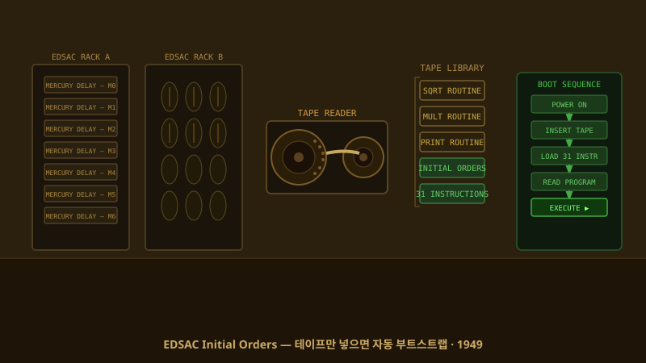
1948년 맨체스터 Baby가 "저장 프로그램" 개념을 증명했지만, 매번 새 프로그램을 메모리에 적어 넣는 일이 여전히 번거로웠어요. 컴퓨터를 켜면 메모리는 텅 비어 있었고, 첫 명령을 어떻게 넣을지가 문제였습니다. 손으로 스위치를 일일이 토글해서 첫 명령을 입력해야 했고, 그 첫 명령이 다른 명령을 메모리에 더 적는 식이었어요. 한 케임브리지 학생은 한숨 쉬며 말했어요. "매번 컴퓨터를 켤 때마다 손으로 똑같은 첫 명령들을 넣어야 해요. 그것도 한 비트라도 틀리면 모든 게 망가져요."
케임브리지의 EDSAC 팀은 해법을 만들었습니다. "우리가 가장 자주 쓰는 첫 명령들을 미리 한 묶음으로 정리해두자. 그리고 컴퓨터를 켜면 이 묶음이 자동으로 실행되게 해서, 그 후에는 사용자가 자기 프로그램을 종이테이프에 적어서 넣기만 하면 되게."
1949년, 그들은 단 31줄짜리 작은 프로그램을 만들었어요. 이름은 Initial Orders(첫 명령들). 이 프로그램이 컴퓨터 켜질 때 자동으로 실행되면서 종이테이프에 적힌 사용자의 진짜 프로그램을 읽어들였습니다. 한 사용자는 환호했어요. "테이프만 넣으면 컴퓨터가 알아서 제 프로그램을 돌려요! 매번 손으로 첫 명령들을 입력하던 시절은 끝났어요."
이게 바로 "부트로더"(boot loader, 시동 프로그램)의 첫 사례였어요. 오늘날 여러분의 컴퓨터를 켜면 0.5초 만에 윈도우나 macOS가 시작되는 것 — 그게 EDSAC의 31줄 코드에서 출발한 "부트 시퀀스"의 직계 후손입니다. 80년이 지난 지금도 모든 컴퓨터가 켜질 때 똑같은 방식으로 작동해요. "처음 시작을 자동화하자"는 단순한 발상이 모든 컴퓨터 시동의 표준이 됐습니다.
이렇게 자주 쓰는 기능들을 미리 모아두고 필요할 때 불러다 쓰는 방식은, 훗날 운영체제가 프로그램들에게 공통 기능을 제공하는 구조로 발전했습니다.
1956
GM-NAA I/O, 세상에 처음 등장한 '운영체제'
"새벽에 깨서 테이프 갈 필요가 없어요. 처리량이 3배로 늘었어요!" 제너럴 모터스 야간조가 만든 작은 프로그램이, 지금 우리가 쓰는 윈도우와 macOS의 진짜 시초가 됐어요.
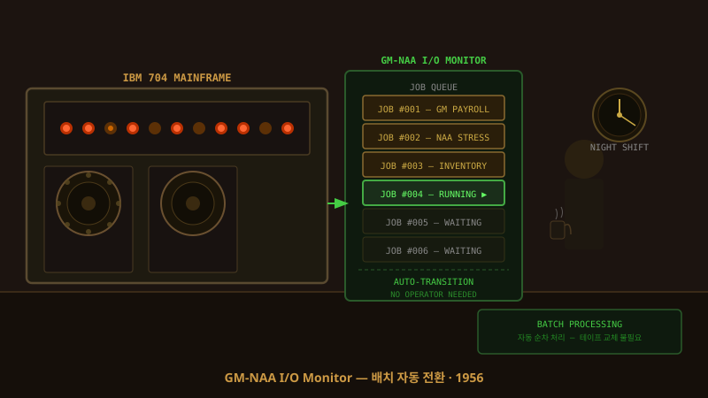
1950년대 중반, 컴퓨터는 비싼 보석 같은 존재였어요. 한 대 가격이 오늘날 돈으로 수십억 원이었고, 전력도 어마어마하게 먹었습니다. 그래서 회사들은 컴퓨터를 24시간 풀가동하려고 했는데, 큰 문제가 있었어요. 한 작업이 끝나고 다음 작업을 시작하려면 운영자가 손으로 새 테이프를 넣고 설정을 바꿔야 했고, 그 사이 컴퓨터는 멍하니 멈춰 있었습니다. 야간 운영자들은 한숨 쉬며 말했어요. "제 일은 한 시간에 한 번씩 테이프를 가는 거예요. 컴퓨터는 비싸게 켜놓는데 절반은 빈 시간이에요."
제너럴 모터스(GM)와 노스 아메리칸 항공(NAA)의 야간 작업조는 해법을 만들기로 했어요. "운영자가 매번 끼어들지 말고, 작업들을 한 묶음으로 미리 테이프에 적어두자. 한 작업이 끝나면 컴퓨터가 자동으로 다음 작업을 시작하게 만드는 거야."
1956년 등장한 GM-NAA I/O가 그 해답이었어요. 사실상 역사상 첫 운영체제로 기록됩니다. 작업들이 끝나고 시작되는 사이의 빈 시간이 사라졌고, 운영자는 테이프 묶음만 가끔 갈아 끼우면 됐어요. 한 운영자는 환호했습니다. "이제 새벽에 깨서 매번 테이프를 갈 필요가 없어요. 컴퓨터가 알아서 다음 작업으로 넘어가요. 같은 시간 안에 처리하는 작업이 3배로 늘었어요!"
이 개념이 "배치 처리"(batch processing, 여러 작업을 한 묶음으로 자동 처리)의 시작이었어요. 컴퓨터가 사람을 기다리지 않고 자기 일을 알아서 하는 시대가 열린 거죠. 오늘날 모든 운영체제(윈도우, macOS, 리눅스)가 동시에 수많은 작업을 자동으로 관리하는 그 시초가 1956년 GM 야간조의 작은 발명이었습니다. "운영체제"(operating system)라는 개념의 출발점이에요.
이처럼 여러 작업을 모아서 자동으로 순차 처리하는 방식을 '일괄 처리(Batch Processing)'라고 부르며, 이는 초기 운영체제의 가장 중요한 역할이 되었습니다.
1959
Fortran Monitor System, "같은 일을 두 번 하지 마라"의 시작
"일주일 걸리던 일이 하루로 줄었어요!" 자주 쓰는 작업을 미리 묶어둔 '도구상자'가 등장하면서, 오늘날 개발자들이 남의 코드를 가져다 쓰는 문화의 씨앗이 뿌려졌어요.
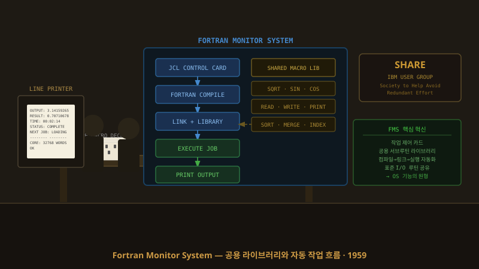
1950년대 말, 컴퓨터에 일을 시키는 방법이 아주 원시적이었어요. 새 프로그램을 만들 때마다 같은 작업을 반복해야 했습니다. 종이테이프를 만들고, 컴파일하고, 메모리에 올리고, 실행하고, 결과를 출력하는 — 이 모든 단계를 수동으로 일일이 했어요. 그리고 새 프로그램을 시작하면 또 처음부터. 한 프로그래머는 한숨 쉬며 말했습니다. "제가 같은 입출력 코드를 매 프로그램마다 다시 짜요. 50번째 프로그램에선 비슷한 코드를 50번째 베껴 쓰는 거죠. 이게 효율적인가요?"
IBM과 일부 사용자들은 발상을 합니다. "우리가 자주 쓰는 일들 — 컴파일, 입출력, 출력 — 을 미리 만들어둔 '도구상자'에 모아두고, 사용자는 그 도구들을 그냥 가져다 쓰게 하자. 그리고 컴파일부터 실행, 출력까지 한 줄 명령으로 자동 진행되게."
1959년 등장한 Fortran Monitor System(FMS)이 그 도구상자였어요. Fortran 언어로 짠 프로그램을 한 명령으로 컴파일·실행·출력까지 자동으로 처리해줬고, 자주 쓰는 매크로(작은 코드 조각)들이 미리 묶여 있었습니다. 한 과학자는 환호했어요. "제가 새 계산을 만드는 데 걸리던 일주일이 하루로 줄었어요. 입출력 코드를 베껴 쓰지 않아도 돼요. FMS의 매크로를 그냥 호출하면 끝!"
이게 "라이브러리"와 "빌드 자동화"의 첫 사례였어요. 오늘날 개발자들이 npm이나 PyPI에서 다른 사람이 만든 코드를 가져다 쓰는 것도, IDE가 컴파일·실행을 한 버튼으로 처리하는 것도 — 전부 1959년 FMS가 보여준 "코드 재사용과 자동화" 정신의 후손입니다. "같은 일은 두 번 하지 마라"는 컴퓨터 과학의 핵심 원칙이 처음으로 시스템 차원에서 구현된 순간이었어요.
FMS가 도입한 '작업 제어 방식'과 '공용 라이브러리' 개념은 이후 운영체제가 복잡한 프로그램 실행 과정을 숨기고 단순하게 만들어주는 핵심 기능으로 자리 잡았
1964
IBM System/360, "3년 만든 프로그램을 또 새로 짜라고요?"
"작년에 산 컴퓨터에서 돌던 프로그램이 새 컴퓨터에서 5배 빠르게 그대로 돌아가요!" 개발자의 시간을 존중하자는 원칙을 처음으로 증명한 IBM의 역사적 도박이에요.
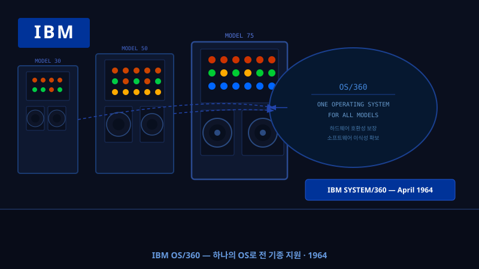
1960년대 초까지 컴퓨터 업계엔 이상한 관행이 있었어요. 회사가 새 컴퓨터를 사면 — 같은 IBM 제품이라도 — 기존 프로그램이 전혀 작동하지 않았습니다. 모델이 다르면 명령어 체계도 달랐거든요. 회사들은 컴퓨터 한 대를 사는 데도 큰 결심이 필요했어요. 그동안 짜둔 모든 프로그램을 처음부터 다시 만들어야 했으니까요. 한 은행 IT 담당자는 한숨 쉬며 말했습니다. "3년 동안 만든 회계 프로그램을 새 컴퓨터에서 처음부터 다시 짜라고요? 시간과 돈이 또 1년분이 들어요."
IBM은 역사상 최대 도박을 합니다. "우리가 6대의 다른 크기 컴퓨터를 만들 건데, 모두 같은 운영체제와 같은 명령어 체계로 통일하자. 작은 회사용 작은 컴퓨터부터 거대 기업용 큰 컴퓨터까지, 한 번 만든 프로그램이 어디서나 작동하게."
1964년 발표된 IBM System/360은 컴퓨터 업계의 모든 것을 바꿨어요. 회사는 작은 모델로 시작했다가 사업이 커지면 큰 모델로 갈아탔는데, 기존 프로그램을 그대로 옮길 수 있었습니다. 한 IT 담당자는 환호했어요. "우리가 작년에 산 작은 모델에서 잘 돌던 프로그램이 새로 산 큰 모델에서 그대로 돌아가요. 게다가 5배 빠르게요! 이거 마법인가요?" IBM은 이 도박으로 대성공을 거뒀고, 30년 이상 컴퓨터 업계 1위를 지켰습니다.
이 "호환성"(compatibility)의 가치는 이후 IT 업계의 신성한 원칙이 됐어요. 윈도우가 30년 전 프로그램도 돌릴 수 있는 것, 안드로이드가 옛날 앱도 지원하는 것, x86 CPU가 옛 명령어를 계속 지원하는 것 — 전부 1964년 System/360이 증명한 "한 번 만든 코드를 오래 쓸 수 있어야 한다"는 원칙에서 비롯된 일이에요. 개발자의 시간을 존중하는 문화의 출발점이었어요.
OS/360이 확립한 '하드웨어와 소프트웨어의 분리' 원칙은 오늘날 우리가 스마트폰이나 PC를 바꿀 때 기존 앱을 그대로 쓸 수 있게 해주는 호환성의 뿌리가 되었습니다.
1969
UNIX, "작은 게 아름답다"는 벨 연구소 두 사람의 반란
"작은 도구 3개를 파이프로 이어 붙였을 뿐인데 복잡한 일이 한 줄로 끝나요!" 오늘날 리눅스, macOS, iOS, 안드로이드가 모두 물려받은 단순함의 철학이 시작된 순간이에요.
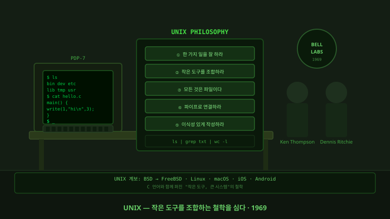
1960년대 후반 운영체제는 점점 더 거대하고 복잡해지고 있었습니다. 한 거대 OS 프로젝트(Multics)에 수백 명이 매달려 수년간 일했지만 끝이 안 보였어요. AT&T 벨 연구소의 켄 톰슨과 데니스 리치는 그 프로젝트에서 빠져나오면서 다른 길을 생각합니다. "이건 잘못된 방향이야. 거대한 한 덩어리로 모든 걸 다 하려고 하지 말자. 작은 도구를 여러 개 만들고, 그것들을 조합해서 큰 일을 하게 하자."
그들의 철학은 단순했어요. "파일 목록을 보여주는 도구 하나, 텍스트에서 패턴을 찾는 도구 하나, 결과를 정렬하는 도구 하나 — 각각은 한 가지 일만 잘하면 돼. 그리고 한 도구의 출력을 다음 도구의 입력으로 흘려보낼 수 있게 만들자. 그러면 작은 도구들로 큰 일을 할 수 있어."
1969년 그들이 만든 UNIX는 "작은 게 아름답다"는 새로운 철학을 컴퓨터 세계에 심었습니다. 모든 게 "파일"이었어요 — 진짜 파일, 키보드 입력, 화면 출력, 프린터, 심지어 다른 프로그램도 전부 같은 방식으로 다뤘습니다. 한 연구원은 처음 써본 후 환호했어요. "제가 명령 한 줄로 '폴더에서 .txt 파일을 모두 찾고, 그 안에서 특정 단어를 검색하고, 결과를 알파벳 순으로 정렬하라'를 할 수 있어요. 작은 도구 3개를 파이프(|)로 이어 붙였을 뿐인데요!"
UNIX의 영향은 어마어마합니다. 리눅스, macOS, iOS, 안드로이드, ChromeOS — 오늘날 거의 모든 운영체제가 UNIX의 후손이에요. 윈도우만이 다른 계보지만, 그것조차 UNIX의 철학에서 영향을 받았습니다. 인터넷 서버의 99%가 UNIX 계열로 돌아가고, 여러분 폰의 운영체제도 UNIX의 정신을 물려받았어요. "단순한 것들의 조합이 복잡한 것보다 강력하다"는 1969년의 깨달음이 50년 후 모든 디지털 세계의 기반이 됐습니다.
유닉스의 간결한 설계 철학과 '모든 것은 파일이다'라는 원칙은 오늘날 리눅스(Linux), 맥OS(macOS), 안드로이드(Android) 등 현대 운영체제 대부분의 뼈대가 되었습니다.
1974
CP/M, "한 번 만든 프로그램을 50개 컴퓨터에서 돌리다"
"우리가 만든 프로그램 시장이 50배로 커졌어요!" 운영체제를 '하드웨어에 맞는 부분'과 '모두 똑같은 부분'으로 나눈 개리 킬달의 발상이, 오늘날 윈도우와 안드로이드가 수많은 제조사에서 똑같이 돌아가는 원리가 됐어요.
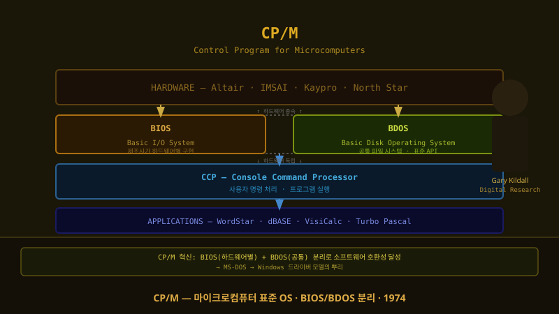
1970년대 초 "마이크로컴퓨터"(작은 개인용 컴퓨터)가 등장하기 시작했어요. 그전까진 컴퓨터가 방 하나 크기였는데, 새로 나온 마이크로프로세서 덕분에 책상 위에 올릴 수 있을 정도로 작아졌습니다. 하지만 큰 문제가 있었어요 — 각 회사가 만든 컴퓨터마다 운영체제가 달라서, 한 컴퓨터용으로 만든 프로그램이 다른 컴퓨터에서 안 돌았습니다. 소프트웨어 회사들은 절망했어요. "우리가 어떤 컴퓨터용으로 프로그램을 만들어야 하나요? 50가지 컴퓨터가 있는데 50가지 버전을 만들 순 없잖아요."
개리 킬달이라는 개발자가 해법을 내놓습니다. "운영체제를 두 부분으로 나누자. 위쪽은 모든 컴퓨터에서 똑같은 '공통 부분', 아래쪽은 각 컴퓨터의 하드웨어에 맞는 '연결 부분'(BIOS). 새 컴퓨터를 만든 회사는 BIOS만 작성하면 같은 운영체제와 같은 프로그램을 쓸 수 있어."
1974년 발표된 CP/M(Control Program for Microcomputers)이 바로 그 해답이었어요. 곧 마이크로컴퓨터 운영체제의 표준이 됐습니다. 다른 회사 컴퓨터에서도 같은 워드 프로세서, 같은 표 계산 프로그램, 같은 게임이 돌아갔어요. 한 소프트웨어 회사 사장은 환호했습니다. "우리가 한 번 만든 프로그램이 50가지 컴퓨터에서 다 돌아가요. 시장이 50배로 커졌어요!"
CP/M은 1981년 IBM PC에 자리를 빼앗기지만(다음 항목에서 다룰 MS-DOS에게), 그 발상은 영원했어요. "운영체제와 하드웨어를 분리한다"는 원칙은 모든 후속 운영체제로 이어졌고, 오늘날 윈도우가 수많은 다른 회사 PC에서 똑같이 돌아가는 것, 안드로이드가 삼성·LG·샤오미 등 모든 폰에서 작동하는 것 — 전부 CP/M의 발상에서 시작됐습니다. 한 사람의 단순한 깨달음이 컴퓨터 산업의 형태를 정해버린 사례예요.
CP/M이 도입한 '하드웨어 제어 계층의 분리' 구조는 이후 MS-DOS를 거쳐 현대 운영체제가 다양한 부품을 지원하는 드라이버 시스템의 기초가 되었
1978
VAX/VMS, "시스템이 1년 동안 한 번도 안 죽었어요!"
한 달에 두 번씩 죽던 은행 시스템을 무중단으로 바꾼 DEC의 두 발명. 메모리가 부족해도 노트북이 안 죽는 것, 구글과 페이스북이 서버 한 대 고장나도 멈추지 않는 것 — 모두 이때 시작됐어요.
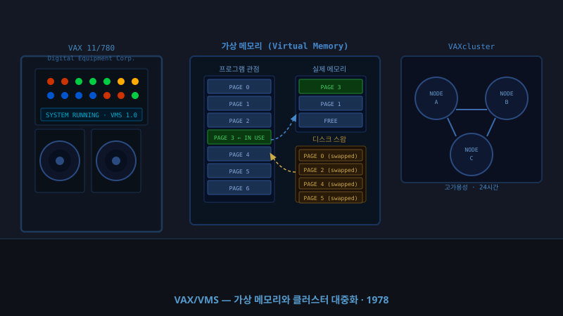
1970년대 후반, 컴퓨터는 점점 중요해졌지만 치명적 약점이 있었어요. 한 번 충돌하면 작업하던 모든 게 사라졌고, 메모리 부족으로 큰 프로그램을 돌리지 못했습니다. 24시간 가동되어야 하는 회사 시스템이 갑자기 멈추는 사고가 잦았어요. 한 은행 IT 담당자는 한숨 쉬며 말했습니다. "우리 시스템이 한 달에 두 번씩 죽어요. 죽으면 직원들이 일을 못 해요. 게다가 큰 보고서를 만들려면 메모리가 부족해서 새벽에 나눠서 돌려요. 답답합니다."
DEC(Digital Equipment Corporation)의 엔지니어들은 두 가지 발상을 합니다. 첫째 — "실제 메모리가 부족해도 디스크를 메모리처럼 쓰자. 자주 안 쓰는 데이터는 디스크로 빼고, 필요할 때만 메모리로 가져와. 사용자는 메모리가 무한한 것처럼 보일 거야." 둘째 — "여러 컴퓨터를 묶어서 하나의 시스템처럼 작동하게 하자. 한 대가 죽어도 다른 대들이 계속 돌아가면 시스템 전체는 절대 안 죽어."
1978년 발표된 VAX/VMS가 그 해답이었어요. 가상 메모리(virtual memory)와 클러스터링(clustering) 기술을 본격 도입했습니다. 한 은행 시스템은 적용 후 환호했어요. "우리 시스템이 1년 동안 한 번도 안 죽었어요! 한 컴퓨터가 죽어도 다른 컴퓨터들이 자동으로 작업을 이어받아요. 그리고 거대한 보고서도 가상 메모리 덕분에 한 번에 처리돼요."
오늘날 여러분의 노트북이 메모리가 부족해도 죽지 않는 것(가상 메모리 덕분), 페이스북·구글 같은 거대 사이트가 한 서버가 죽어도 멈추지 않는 것(클러스터 덕분) — 전부 1978년 VAX/VMS가 보여준 두 가지 발상의 후손입니다. "무중단 시스템"이라는 개념이 처음으로 진지하게 구현된 순간이었어요. 한 컴퓨터의 한계를 넘어선 분산 시스템 시대의 시작이었습니다.
VMS가 선보인 가상 메모리 관리와 시스템 보호 기술은 훗날 윈도우 NT(Windows NT)의 설계에 큰 영향을 주었으며, 현대 서버 운영체제의 필수 기능이
1981
MS-DOS, 5만 달러에 산 운영체제로 제국을 세운 빌 게이츠
"다른 회사 PC를 샀는데도 IBM용 프로그램이 그대로 돌아가요!" 무명에 가까웠던 마이크로소프트가 IBM과 계약하며 내건 '한 대당 라이선스' 조건 하나가, 작은 회사를 30년간 IT 업계 1위로 키워냈어요.
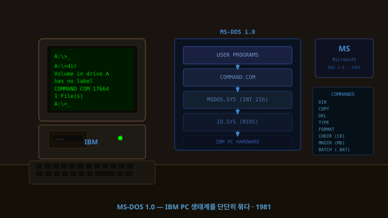
1980년 IBM은 큰 결심을 합니다. 개인용 컴퓨터(PC) 시장에 뛰어들기로 한 거예요. 그전까진 IBM은 거대 기업용 컴퓨터만 만들었지만, 애플 같은 작은 회사들이 PC 시장에서 성공하는 걸 보고 자기도 들어가야겠다고 판단했습니다. 문제는 운영체제였어요. IBM은 이 PC를 빨리 출시하고 싶었고, 운영체제를 자체 개발할 시간이 없었습니다. "누가 빨리 만들어줄 사람 없을까?"라며 외부에서 찾기 시작했어요.
당시 무명에 가깝던 작은 회사가 손을 들었습니다. 빌 게이츠가 이끄는 마이크로소프트였어요. 사실 마이크로소프트는 그때 운영체제를 갖고 있지도 않았어요. 빌 게이츠는 다른 회사의 운영체제를 5만 달러에 사들이고, 그걸 IBM에 맞게 수정해서 납품했습니다. "우리가 IBM의 새 PC용으로 운영체제를 만들어 드리겠습니다. 그리고 라이선스 비용은 한 대당 작게 받겠습니다 — 대신 우리는 다른 회사한테도 이 운영체제를 팔 수 있게 해주세요."
이렇게 1981년 등장한 게 MS-DOS(Microsoft Disk Operating System)였어요. IBM PC가 폭발적으로 인기를 얻자, 다른 회사들도 "IBM PC와 똑같이 작동하는" PC를 만들기 시작했고, 그 PC들도 모두 MS-DOS를 깔았습니다. 한 PC 사용자는 환호했어요. "제가 IBM PC가 아니라 다른 회사 PC를 샀는데도, IBM PC용 프로그램이 그대로 돌아가요! 모두가 같은 MS-DOS를 쓰니까요."
MS-DOS의 진짜 영향은 마이크로소프트라는 거대 기업의 탄생이었어요. 빌 게이츠의 한 결정 — "한 대당 라이선스 받기, 다른 회사에도 팔 권리 갖기" — 이 마이크로소프트를 30년간 IT 업계 1위로 만들었습니다. MS-DOS는 1995년 윈도우 95에 자리를 내주지만, "한 운영체제가 모든 PC에서 똑같이 돌아간다"는 그 발상은 오늘날까지 이어집니다. 작은 회사가 한 결정으로 산업 전체의 형태를 바꾼 사례예요.
MS-DOS를 중심으로 형성된 거대한 소프트웨어 생태계는 마이크로소프트가 PC 시장을 주도하는 발판이 되었으며, 이후 윈도우(Windows) 시대로 자연스럽게 이어졌습니다.
1984
매킨토시 System 1, "명령어 한 줄도 안 외우고 편지를 썼어요"
검은 화면에 흰 글씨로 명령어를 쳐야 했던 시절, 잡스가 본 제록스 연구소의 한 장면이 만든 혁명. 폴더를 더블클릭하고 휴지통에 파일을 끌어다 놓는, 지금 우리 모두가 당연하게 쓰는 방식의 첫날이에요.
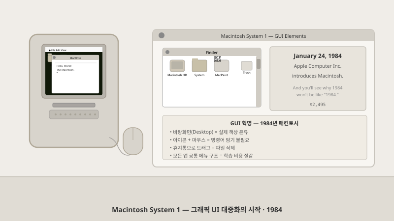
1980년대 초 컴퓨터를 쓴다는 건 외계어를 배우는 것 같았어요. 화면은 검은 바탕에 흰 글씨뿐이었고, 뭔가를 하려면 정확한 명령어를 외워서 키보드로 쳐야 했습니다. 파일을 복사하려면 copy A.txt B.txt라고 정확히 쳐야 했고, 한 글자라도 틀리면 에러가 났어요. 컴퓨터는 "전문가만 쓰는 도구"였습니다. 한 일반인은 한숨 쉬며 말했어요. "저는 컴퓨터로 편지 쓰고 싶을 뿐인데, 100가지 명령어를 외워야 한다고요? 너무 어려워요."
애플의 스티브 잡스는 제록스 PARC 연구소에서 본 실험적 컴퓨터에 충격을 받았습니다. 그 컴퓨터는 화면에 그림(아이콘)이 있고, 마우스로 그것들을 클릭해서 조작하는 방식이었어요. 그는 외쳤습니다. "이거예요! 일반인이 컴퓨터를 쓸 수 있는 유일한 방법은 이거예요. 명령어를 외우게 하지 말고, 그림으로 보여주고 마우스로 만지게 합시다."
1984년 발표된 매킨토시(Macintosh)와 System 1이 바로 그 비전을 현실로 만들었어요. 화면에 폴더 아이콘이 있고, 그걸 더블클릭하면 폴더가 열렸어요. 파일을 다른 폴더로 옮기려면 마우스로 끌어다 놓기만 하면 됐고요. 휴지통 아이콘에 끌어 놓으면 파일이 삭제됐습니다. 한 평범한 사용자는 처음 써본 후 환호했어요. "제가 명령어 한 줄도 안 외우고 컴퓨터로 편지를 쓰고 출력했어요! 마우스로 그림을 끌어다 놓는 게 너무 직관적이에요!"
매킨토시 System 1은 "컴퓨터의 민주화"의 시작이었어요. 그전까진 프로그래머와 과학자만 쓰던 컴퓨터가 갑자기 모든 사람의 도구가 됐습니다. 마이크로소프트도 곧 윈도우로 따라했고, 30년 후에 우리가 쓰는 모든 시각적 인터페이스 — 스마트폰의 앱 아이콘, 폴더, 파일 끌어 놓기 — 가 1984년 매킨토시에서 시작됐어요. 컴퓨터를 "전문가 도구"에서 "모두의 도구"로 바꾼 결정적 한 걸음이었습니다.
System 1이 선보인 창, 아이콘, 마우스 포인터 중심의 화면 구성은 오늘날 우리가 사용하는 모든 PC와 스마트폰 인터페이스의 출발점이 되었습니다.
1991
Linux, 21살 학생이 올린 짧은 글 하나로 시작된 인터넷의 심장
"그냥 취미예요. 어떤 기능을 보고 싶은지 알려주세요." 핀란드 대학생 리누스 토르발스의 인터넷 게시글 하나가, 30년 후 구글·페이스북·카카오·네이버가 돌아가는 서버와 전 세계 폰의 70%를 움직이게 될 줄은 아무도 몰랐어요.
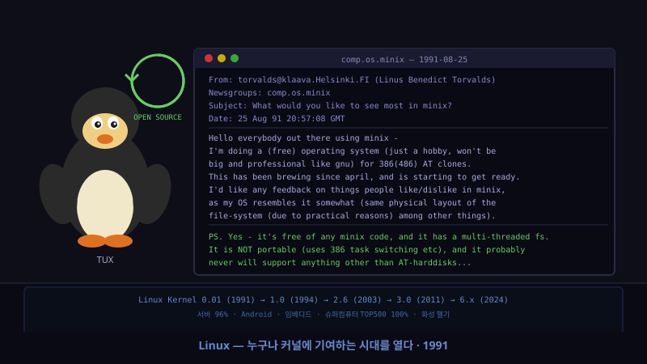
1991년 핀란드의 한 21살 컴퓨터 공학과 학생이 인터넷 게시판에 짧은 글을 올렸어요. "안녕하세요, 저는 386 PC용 무료 운영체제를 만들고 있습니다. 그냥 취미예요. 큰 거대한 GNU 같지는 않을 거예요. 어떤 기능을 보고 싶은지 알려주세요." 글쓴이의 이름은 리누스 토르발스였습니다. 그는 학교에서 비싼 UNIX를 쓰는데, 집에서도 UNIX 같은 시스템을 쓰고 싶었어요. 하지만 살 돈이 없었고, 그래서 직접 만들기로 했습니다.
처음엔 그냥 취미 프로젝트였어요. 리누스 혼자 짠 작은 운영체제 코드. 그런데 그가 코드를 인터넷에 공개하고 "함께 만들 사람 없나요?"라고 물어보자 놀라운 일이 일어났어요. 전 세계 개발자들이 자발적으로 모여들었습니다. 미국, 독일, 일본, 호주의 개발자들이 코드를 개선하고, 새 기능을 추가하고, 버그를 고쳤어요. 인터넷이라는 새 도구가 없었다면 불가능한 협업이었습니다.
그렇게 자라난 Linux(리눅스)는 무료에 강력하고, 누구나 코드를 볼 수 있고, 누구나 기여할 수 있는 운영체제가 됐어요. 한 학생 개발자는 환호했습니다. "제가 학교 과제로 운영체제 코드를 직접 들여다봤어요! 진짜 유닉스 코드를 공부할 수 있어요. 그리고 제가 발견한 버그를 고친 게 진짜 시스템에 들어갔어요!" Linux는 곧 학교, 연구소를 거쳐 인터넷 서버로 진출했고, 안정성과 무료라는 두 가지 매력으로 폭발적으로 퍼졌습니다.
오늘날 Linux는 인터넷의 운영체제예요. 구글, 페이스북, 아마존, 카카오, 네이버 — 거의 모든 거대 사이트가 리눅스 서버 위에서 돌아갑니다. 그뿐 아니라 안드로이드도 리눅스 기반이에요(전 세계 폰의 70%). 슈퍼컴퓨터의 100%, 스마트 TV·자동차·라우터의 대부분도 리눅스입니다. 한 21살 학생의 취미 프로젝트가 디지털 문명의 기반이 된 거예요. "함께 만들면 더 좋은 게 나온다"는 오픈소스 정신의 가장 빛나는 증거입니다.
오늘날 리눅스는 전 세계 웹 서버의 대부분, 안드로이드 스마트폰, 스마트 TV, 심지어 화성 탐사선에 이르기까지 보이지 않는 곳에서 세상을 움직이는 가장 중요한 운영체제가 되었습니다.
1995
Windows 95, 롤링 스톤스 음악과 함께 거실로 들어온 컴퓨터
첫 4일에 100만 장, 1년에 4천만 장이 팔린 IT 역사상 가장 큰 마케팅 이벤트. 30년이 지난 지금도 우리가 매일 누르는 화면 왼쪽 아래의 그 '시작' 버튼이 처음 등장한 날이에요.
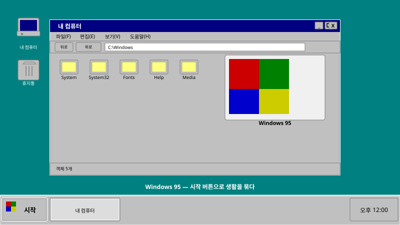
1990년대 초 윈도우는 이상한 위치에 있었어요. MS-DOS 위에 얹은 그래픽 껍데기 같았고, 여러 프로그램을 동시에 띄우면 자주 충돌했고, 메모리 관리가 엉망이었습니다. 사용자들은 매킨토시의 깔끔한 인터페이스를 부러워했어요. 한 직장인은 한숨 쉬며 말했습니다. "우리 회사는 윈도우 3.1을 쓰는데 하루에 두 번씩 멈춰요. 게다가 프로그램 시작하려면 메뉴를 5단계로 들어가야 해요. 매킨토시 부럽네요."
마이크로소프트는 5년에 걸쳐 새 윈도우를 만들었습니다. 핵심 발상은 두 가지였어요. 첫째 — "사용자가 어떤 일을 시작하려면 항상 한 곳에서 시작할 수 있게 하자. 화면 왼쪽 아래에 큰 '시작' 버튼을 만들어서, 거기 모든 게 모이게." 둘째 — "여러 프로그램을 동시에 안전하게 돌릴 수 있게 32비트 기반으로 다시 만들자."
1995년 8월 24일 발표된 Windows 95는 역사상 가장 큰 IT 마케팅 이벤트가 됐어요. 발매 당일 전 세계 매장 앞에 줄이 서고, 마이크로소프트는 롤링 스톤스의 음악(Start Me Up)으로 수백만 달러짜리 광고를 만들었습니다. 그 광고의 핵심 메시지는 단 하나 — "시작 버튼을 누르세요"(Where do you want to go today?). 한 평범한 사용자는 첫 사용 후 환호했어요. "제가 컴퓨터를 켜면 화면 아래 큰 시작 버튼이 있어요. 그걸 누르면 모든 게 거기 있어요. 너무 직관적이에요!"
Windows 95는 PC를 완전히 일상품으로 만들었어요. 그전까진 회사나 마니아만 쓰던 컴퓨터가 평범한 가정의 거실에 들어왔습니다. 첫 4일 동안 100만 카피가 팔렸고, 1년 안에 4천만 카피였어요. 그리고 30년이 지난 오늘날에도 윈도우의 시작 버튼은 여전히 화면 왼쪽 아래에 있습니다 — 윈도우 11에서도요. 한 디자인 결정이 30년 동안 지속된 보기 드문 사례예요.
시작 메뉴와 작업 표시줄로 대표되는 윈도우 95의 화면 디자인은 너무나 성공적이어서, 수십 년이 지난 현재의 윈도우 시스템에서도 그 기본 틀이 그대로 유지되고 있
2001
Mac OS X, 망할 위기의 애플을 구한 '디자인 + UNIX' 결단
"한 달째 한 번도 안 죽었어요! 터미널을 열면 진짜 UNIX까지 있어서 개발자도 행복해해요!" 이때 내린 결정 하나가 훗날 iPhone, iPad, Apple Watch가 모두 한 뿌리를 공유하게 만들었어요.
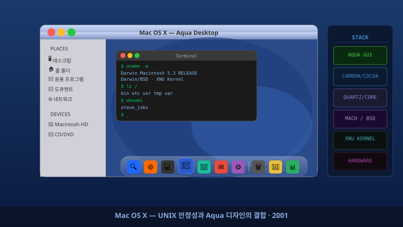
1990년대 후반 애플은 위기에 빠져 있었어요. 매킨토시(1984)가 혁명적이었지만, 그 후로 운영체제 발전이 멈춰 있었습니다. 자주 충돌하고, 메모리 관리가 엉망이고, 모던한 기능이 부족했어요. 마이크로소프트의 윈도우에 시장을 빼앗기고 있었고, 애플은 망할 위기였습니다. 1997년 스티브 잡스가 회사로 돌아왔을 때 그는 직시했어요. "우리 운영체제는 낡았어요. 처음부터 다시 만들어야 합니다. 그것도 안정적이고 강력한 기반 위에서요."
애플은 충격적인 결정을 합니다. "매킨토시의 예쁜 디자인은 살리되, 그 아래 엔진은 통째로 갈아엎자. 우리가 갖고 있던 NeXT 운영체제(잡스가 애플 떠나서 만들었던 것)의 UNIX 기반 위에 매킨토시 디자인을 얹는 거야. UNIX의 안정성 + 매킨토시의 디자인 = 최고의 운영체제."
2001년 발표된 Mac OS X가 바로 그 결과물이었어요. 겉모습은 익숙한 매킨토시였지만, 속은 완전히 다른 UNIX 기반이었습니다. "안정성과 디자인을 동시에 가질 수 있다"는 걸 증명했어요. 한 디자이너는 첫 사용 후 환호했습니다. "한 달째 한 번도 안 죽었어요! 그리고 화면은 여전히 아름답고, 여러 프로그램을 동시에 돌려도 끄떡없어요. 게다가 터미널을 열면 진짜 UNIX가 있어서 개발자도 행복해해요!"
Mac OS X의 발상은 애플을 역사상 가장 가치 있는 회사로 만드는 출발점이 됐어요. 같은 UNIX 기반으로 나중에 iOS(아이폰), iPadOS(아이패드), watchOS(애플워치)도 만들어졌습니다. 모든 애플 제품이 같은 뿌리를 공유하면서 매끄럽게 연결되는 것 — 그게 2001년 "UNIX 위에 디자인을 얹자"는 결정에서 시작됐어요. 회사를 망할 위기에서 구한 한 결정이 20년 후 산업 전체를 지배하게 된 사례입니다.
Mac OS X가 확립한 '탄탄한 유닉스 기반 위의 세련된 인터페이스' 구조는 이후 아이폰(iOS)과 애플워치(watchOS) 등 애플의 모든 스마트 기기 운영체제로 이어졌
2007
iPhone OS 1, "왜 손가락이 있는데 펜을 써야 하나요?"
2007년 1월 9일, 잡스가 "이건 세 가지 제품이 아닙니다"라고 외친 그날. 블랙베리와 스타일러스 펜의 시대가 끝나고, 우리가 지금 카카오톡 사진을 손가락 두 개로 확대하는 일상이 시작됐어요.
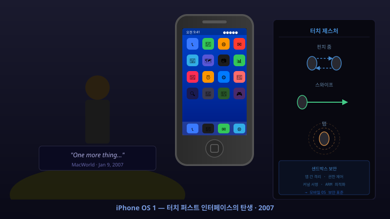
2007년 1월 9일, 스티브 잡스가 무대에 올라 새 제품을 발표했어요. "오늘 우리는 세 가지 혁명적 제품을 소개합니다. 와이드스크린 아이팟, 혁신적인 휴대폰, 그리고 인터넷 통신기기입니다. 와이드스크린 아이팟... 휴대폰... 인터넷 통신기기..." 잠시 후 그는 미소 지으며 말했어요. "이건 세 가지 제품이 아닙니다. 한 가지 제품입니다. 우리는 이걸 아이폰이라고 부를 겁니다." 청중은 박수와 환호로 가득찼고, 그날 휴대폰의 역사가 영원히 바뀌었습니다.
당시 스마트폰은 이미 있었어요. 블랙베리, 노키아 심비안, 윈도우 모바일 — 작은 키보드와 스타일러스 펜으로 조작하는 기기들이었습니다. 잡스는 그것들을 한심하게 생각했어요. "왜 우리가 손가락을 갖고 있는데 펜을 써야 하나요? 키보드는 화면 절반을 차지해요. 손가락만으로 모든 걸 할 수 있어야 합니다."
그가 만든 게 iPhone OS 1(나중에 iOS로 이름 바뀜)이었어요. 핵심은 "멀티터치"였습니다. 손가락 두 개로 사진을 확대하고(핀치 줌), 한 손가락으로 페이지를 부드럽게 넘기고, 키보드는 필요할 때만 화면에 떠올랐어요. 한 첫 사용자는 환호했습니다. "제가 펜이 없어요! 그냥 손가락으로 만지면 모든 게 작동해요. 사진 확대도 손가락 두 개로! 이거 진짜 다른 차원의 기기예요!"
iPhone OS 1은 단순한 운영체제가 아니라 인류의 일상을 통째로 바꾼 사건이에요. 이후 안드로이드(2008)도 비슷한 방향으로 만들어졌고, 모든 휴대폰 회사가 터치스크린 폰으로 전환했습니다. 오늘날 여러분이 손가락 두 개로 카카오톡 사진을 확대하고, 손가락 하나로 네이버를 스크롤하고, 화면 키보드로 메시지를 치는 것 — 전부 2007년 스티브 잡스가 "손가락 하나면 충분합니다"라고 외친 그 순간에서 시작됐어요. 한 제품 발표가 인류의 일상을 영원히 바꾼 진귀한 순간이었습니다.
iPhone OS가 제시한 터치 중심의 인터페이스와 안전한 앱 실행 환경은 현대 스마트폰의 표준이 되었으며, 이후 '앱 스토어'라는 거대한 모바일 생태계가 탄생하는 기반이 되었습니다.
2008
Android 1.0, "30만 원짜리 폰으로 100만 원짜리와 같은 일을 해요"
아이폰 충격에 빠진 삼성·LG·모토로라를 위해 구글이 내민 무료 오픈소스 운영체제. 인도·동남아·아프리카의 수십억 명이 인생 첫 인터넷을 경험하게 만든 '기술의 민주화' 사건이에요.
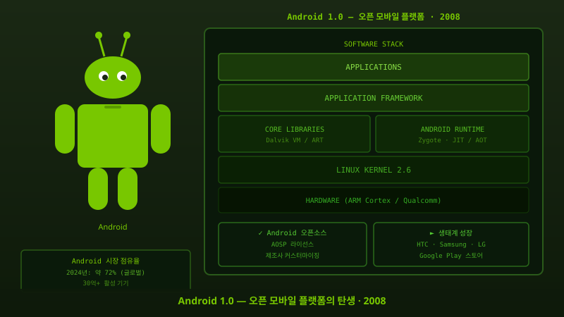
2007년 아이폰이 충격적으로 등장하자 업계 모두가 패닉에 빠졌어요. 노키아, 삼성, 모토로라 같은 거대 휴대폰 회사들은 자기네 제품이 갑자기 구식처럼 보였습니다. 어떻게 따라잡아야 할까? 각자 운영체제를 따로 만들어야 할까? 그런데 운영체제 만드는 건 쉽지 않았어요. 한 휴대폰 회사 임원은 한숨 쉬며 말했습니다. "우리가 아이폰 같은 운영체제를 만들려면 수년이 걸려요. 그동안 애플이 시장을 다 가져갈 거예요."
구글은 다른 길을 봤어요. "우리가 무료 오픈소스 모바일 운영체제를 만들어서 모든 휴대폰 회사에게 줄게요. 여러분은 그걸 가져다 자기 폰에 깔기만 하면 돼요. 그러면 모두가 함께 애플에 맞설 수 있어요."
2008년 9월 발표된 Android 1.0이 바로 그 운영체제였어요. 무료에, 오픈소스에, 누구나 가져다 수정해서 쓸 수 있었습니다. 첫 안드로이드 폰은 HTC Dream(T-Mobile G1)이었어요. 곧 삼성, LG, 소니, 모토로라 같은 모든 회사가 안드로이드를 채택했고, 전 세계 모든 가격대의 폰에 안드로이드가 깔렸습니다. 한 신흥국 사용자는 환호했어요. "30만 원짜리 안드로이드 폰으로 100만 원짜리 아이폰과 비슷한 일을 할 수 있어요. 인터넷, 카메라, 앱 — 다 돼요!"
오늘날 안드로이드는 전 세계 스마트폰의 70% 이상을 차지합니다. 삼성, 샤오미, 화웨이, 오포, 비보 같은 거의 모든 비(非) 애플 폰이 안드로이드예요. 한국에서는 갤럭시 시리즈가 거의 모두 안드로이드입니다. 인도, 중국, 동남아시아, 아프리카 — 전 세계 수십억 명이 처음으로 인터넷에 접속한 게 안드로이드 폰을 통해서였어요. "기술의 민주화" — 가난한 나라 사람들도 손에 컴퓨터를 가질 수 있게 해준 것 — 그게 안드로이드의 진짜 유산입니다. 1991년 리눅스의 정신("함께 만든 무료 운영체제")이 모바일 시대에 다시 한번 빛난 사례예요.
안드로이드의 개방적인 정책은 스마트폰의 대중화를 앞당겼으며, 다양한 제조사와 서비스가 하나의 생태계 안에서 공존하고 경쟁하는 혁신적인 시장을 만들어냈습니다.
2013
Docker, "'내 컴퓨터에선 되는데' 농담이 사라졌어요"
앱과 필요한 환경 전부를 '컨테이너' 한 통에 넣어서 옮기면 어디서든 똑같이 작동한다는 발상. 화물 컨테이너에서 영감을 받은 작은 회사의 아이디어가 거대 사이트들의 뒷면 전부를 바꿨어요.
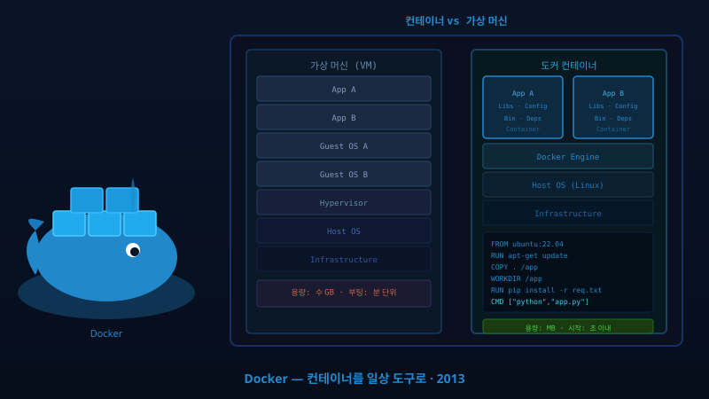
2010년대 초 개발자들은 한 가지 끈질긴 문제에 시달렸어요. "내 컴퓨터에서는 잘 돌아가는데 서버에서는 안 돼"라는 사고였습니다. 개발자가 노트북에서 만든 프로그램을 실제 서버에 배포하면 작동하지 않는 일이 흔했어요. 노트북과 서버의 환경(OS 버전, 설치된 라이브러리, 설정)이 미묘하게 달랐기 때문이죠. 한 개발자는 한숨 쉬며 말했습니다. "제가 만든 코드는 분명히 잘 돌아가는데, 서버에 올리면 자꾸 깨져요. 환경 차이를 일일이 맞추는 게 너무 힘들어요. 전체 서버를 통째로 복사할 수 있으면 좋을 텐데."
한 작은 회사 dotCloud의 개발자들은 기발한 아이디어를 냅니다. "애플리케이션과 그게 필요로 하는 모든 환경(OS, 라이브러리, 설정)을 한 통으로 묶자. 그 통을 옮기기만 하면 어디서든 똑같이 작동하게. 마치 화물 컨테이너처럼 — 안에 뭐가 들었든 컨테이너 자체는 표준화돼 있어서 어떤 배에든 실을 수 있는 것처럼."
2013년 그들이 발표한 Docker가 바로 그 해답이었어요. 컨테이너에 애플리케이션 + 모든 환경을 한 통(이미지)으로 만들어서, 그 이미지를 다른 컴퓨터로 옮기면 어디서든 똑같이 작동했습니다. 한 개발자는 첫 사용 후 환호했어요. "제 노트북에서 Docker로 앱을 만들었고, 그 이미지를 그대로 서버에 올렸더니 즉시 작동해요! 환경 차이로 인한 사고가 사라졌어요. '내 컴퓨터에선 되는데' 농담이 사라졌어요!"
Docker는 IT 업계를 휩쓸었어요. 모든 회사가 자기 시스템을 컨테이너로 옮기기 시작했고, "컨테이너화"라는 단어가 유행어가 됐습니다. 이게 발판이 되어 곧 마이크로서비스(작은 서비스 수십 개로 시스템 쪼개기), Kubernetes(다음 항목 — 컨테이너 수천 개 관리), 서버리스 같은 모든 현대 인프라 기술이 탄생했어요. 오늘날 거의 모든 거대 사이트의 뒷면이 Docker 컨테이너로 돌아갑니다. 한 작은 회사의 단순한 발상이 IT 인프라 전체의 형태를 바꾼 사례예요.
도커가 대중화시킨 컨테이너 기술은 소프트웨어를 빠르고 안전하게 배포하는 현대 클라우드 환경의 핵심 표준으로 자리 잡았습니다.
2015
Kubernetes, 구글이 10년간 숨겨둔 노하우를 세상에 풀다
"컨테이너가 죽으면 자동으로 새로 떠요. 손 안 대도 시스템이 알아서 살아요!" 원하는 상태만 적어두면 기계가 알아서 맞춰주는 새 방식이, 카카오·네이버·토스·쿠팡을 포함한 거대 IT 회사들의 기본이 됐어요.
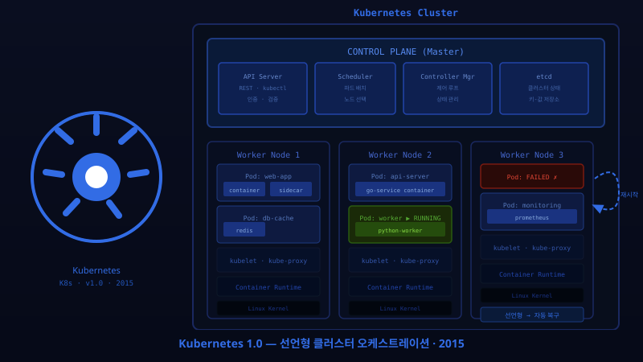
Docker(2013)로 컨테이너가 인기를 얻으면서 새 문제가 생겼어요. 한 회사가 컨테이너 1만 개를 어떻게 관리해? 어느 컨테이너가 어느 서버에 떠야 하고, 어떻게 트래픽을 분배하고, 한 컨테이너가 죽으면 어떻게 자동 복구하고, 새 버전을 배포할 때 사용자에게 영향 없이 어떻게 갈아끼워야 하는가. 손으로 관리하기 불가능한 규모였어요. 한 운영자는 한숨 쉬며 말했습니다. "우리 회사가 컨테이너 5천 개를 운영하는데, 매일 누가 죽고 누가 새로 뜨고 난리예요. 사람이 다 추적할 수가 없어요."
구글은 이 분야의 베테랑이었어요. 자기네 검색엔진을 위해 10년 이상 비슷한 시스템을 운영하고 있었거든요(내부 이름은 Borg). 그들은 결단했습니다. "우리가 Borg에서 배운 모든 노하우를 오픈소스로 공개하자. 그래서 모든 회사가 우리처럼 거대한 컨테이너 시스템을 운영할 수 있게."
2015년 발표된 Kubernetes 1.0(쿠버네티스, 줄여서 k8s)이 바로 그 해답이었어요. 핵심 발상은 "선언형"(declarative) 운영이었습니다. 운영자가 "이렇게 해줘, 저렇게 해줘"라고 명령하지 않고, "내가 원하는 상태는 이거야"라고만 선언했어요. "이 서비스는 항상 컨테이너 5개가 떠 있어야 하고, CPU 사용률이 70%를 넘으면 자동으로 늘어나고..."라고 YAML 파일에 적으면 Kubernetes가 알아서 그 상태를 유지했습니다. 한 운영자는 환호했어요. "한 컨테이너가 죽으면 자동으로 새 컨테이너가 떠요! 트래픽이 늘면 자동으로 더 많은 컨테이너가 만들어져요. 제가 손 안 대도 시스템이 알아서 살아요!"
Kubernetes는 곧 클라우드 시대의 사실상 표준 운영체제가 됐어요. 거의 모든 거대 회사가 자기 인프라를 Kubernetes 위에서 돌립니다. AWS, 구글 클라우드, Azure 같은 클라우드 회사들도 Kubernetes 서비스를 핵심 상품으로 팔고 있고요. 카카오, 네이버, 토스, 쿠팡 — 한국의 거대 IT 회사들도 마찬가지예요. 한 회사의 내부 노하우가 오픈소스로 공개되면서 산업 전체의 표준이 된 보기 드문 사례입니다.
쿠버네티스의 '목표 상태를 선언하면 시스템이 알아서 맞춘다'는 개념은 현대 클라우드 인프라를 자동화하고 안정적으로 운영하는 가장 중요한 원칙이 되었습니다.
2020
macOS Big Sur, "인텔용 프리미어가 M1 맥에서 더 빠르게 돌아가요!"
25년간 모든 PC의 기본이었던 인텔 칩을 떠나겠다는 애플의 충격 발표. 새 맥은 2~3배 빨라지고 배터리는 18시간을 가면서, 옛 프로그램도 그대로 돌아가는 '불가능한 전환'을 해낸 운영체제예요.
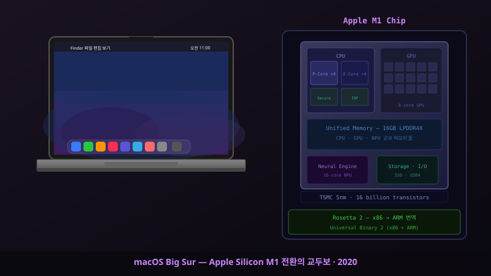
2020년 6월, 애플은 충격적인 발표를 했어요. "우리는 인텔 칩을 떠나 우리가 직접 만든 칩으로 모든 맥을 전환합니다." 청중은 술렁였어요. 인텔 칩은 25년간 모든 PC와 맥의 기본이었는데, 거기서 벗어난다는 거였거든요. 가장 큰 우려는 호환성이었습니다. 기존에 만든 모든 맥 프로그램이 새 칩에서 안 돌아가면 어쩌나? 사용자들은 두려워했어요. "제가 10년 전에 산 포토샵이 새 맥에서 안 돌면 어떡해요? 다 새로 사야 하나요?"
애플은 이 걱정에 대비해 두 가지 핵심 기술을 준비했어요. 첫째, Universal Binary(범용 바이너리) — 새 맥 프로그램은 인텔과 새 칩 양쪽 코드를 모두 담아서 어디서든 작동하게 합니다. 둘째, Rosetta 2 — 옛 인텔용 프로그램을 새 칩에서 돌릴 수 있게 자동 번역하는 시스템. "걱정 마세요. 옛 프로그램도 새 맥에서 거의 정상 속도로 돌아갈 거예요. 사용자 입장에선 칩이 바뀐 줄 모르고 쓰실 수 있어요."
2020년 11월 출시된 macOS Big Sur가 바로 이 거대 전환의 첫 운영체제였어요. 11월 10일 첫 Apple Silicon 칩(M1)을 탑재한 맥이 출시됐고, 사용자들은 충격받았습니다. 한 사용자는 환호했어요. "제 인텔용 어도비 프리미어가 새 M1 맥에서 더 빠르게 돌아가요! 이게 가능한 거예요? 게다가 노트북 배터리가 18시간 가요!" 첫 M1 맥은 인텔 모델보다 2~3배 빠르고 배터리는 2배 오래 갔습니다.
이 전환은 IT 업계 전체에 충격을 줬어요. "칩 제조사를 통째로 갈아치우면서도 사용자에게 거의 영향을 안 준다"는 게 불가능에 가까운 일이었거든요. macOS Big Sur는 그 불가능을 가능하게 만든 운영체제였습니다. 이후 마이크로소프트도 ARM 윈도우를 본격 추진했고, 컴퓨터 업계 전체가 인텔 독점에서 벗어나기 시작했어요. 한 회사의 결단이 산업의 형태를 바꾼 또 한 사례입니다.
macOS Big Sur는 컴퓨터와 모바일 기기의 생태계를 하나로 통합하는 중요한 이정표가 되었으며, 애플 실리콘의 강력한 성능을 이끌어내는 핵심 역할을 했습니다.
2021
Windows 11, "신입사원에게 노트북을 보낼 필요가 없어졌어요"
코로나로 갑자기 집에서 일하게 된 사람들을 위해, "PC는 물리적 기기"라는 30년 공식을 깨뜨린 윈도우. 집 노트북, 회사 데스크톱, 카페 태블릿 어디서든 같은 내 작업 환경이 따라오는 시대가 열렸어요.
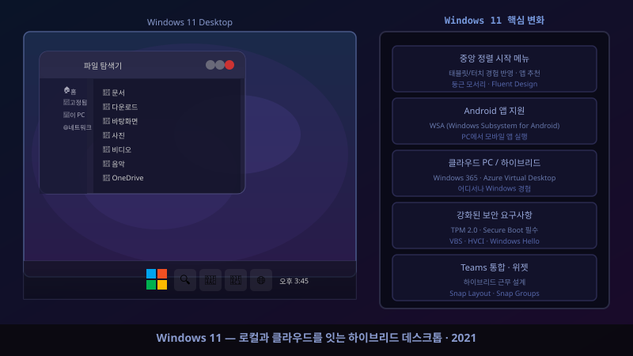
2020년 코로나19 팬데믹이 IT 업계에 거대한 변화를 가져왔어요. 사람들이 갑자기 집에서 일하고, 회사 컴퓨터가 아니라 개인 노트북으로 업무를 보고, 클라우드 서비스가 필수가 됐습니다. 마이크로소프트는 깨달았어요. "이제 컴퓨터의 정의가 바뀌고 있어요. PC만이 컴퓨터가 아니라, 클라우드도, 폰도, 태블릿도 모두 연결된 하나의 작업 환경이 됐어요. 우리 운영체제도 그에 맞춰 진화해야 합니다."
Windows 10이 "마지막 윈도우"라고 했던 마이크로소프트는 약속을 깼습니다. "새 시대에는 새 윈도우가 필요해요." 그래서 만든 게 Windows 11이었습니다. 2021년 10월 발표된 이 운영체제의 핵심은 단순한 디자인 변경이 아니었어요. 클라우드와의 통합, 다른 기기와의 매끄러운 연결, 그리고 "내 PC든 클라우드 PC든 똑같이 쓸 수 있다"는 비전이었습니다.
가장 큰 변화는 Windows 365(클라우드 PC)와의 통합이었어요. 회사가 직원들에게 물리 노트북 대신 클라우드 PC를 제공할 수 있게 됐고, 직원은 어떤 기기에서든 자기 윈도우 환경에 접속할 수 있었습니다. 한 회사 IT 담당자는 적용 후 환호했어요. "신입사원에게 노트북을 물리적으로 보내지 않아도 돼요. 그냥 클라우드 PC 계정만 만들어주면, 신입은 자기 집 노트북, 회사 데스크톱, 카페 태블릿 — 어디서든 똑같은 윈도우 환경을 써요. 출장이나 재택근무가 정말 편해졌어요!"
Windows 11은 "PC = 물리적 기기"라는 30년 전 등식을 깨뜨렸어요. 이제 PC는 어디든 있을 수 있고, 어떤 기기로든 접속할 수 있는 가상의 작업 환경이 됐습니다. 동시에 안드로이드 앱도 윈도우에서 돌릴 수 있게 됐고, 게임용 DirectX 12와 AI 통합까지 추가됐어요. 코로나로 갑자기 빨라진 "원격 근무 시대"를 운영체제 차원에서 대응한 첫 윈도우였습니다. 한 시대의 변화에 한 운영체제가 답한 사례예요.
Windows 11은 PC와 모바일 경험을 융합하려는 마이크로소프트의 비전을 보여주며, 현대적인 디자인과 강화된 보안으로 새로운 윈도우 시대를 열었습니다.